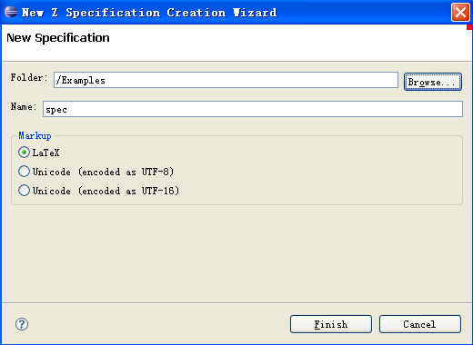

The CZT editor plug-in provides a convenient wizard to help create a new Z specification. The wizard can be opened using the menu entry File > New > Other… > CZT > Z Specification.

In this wizard, enter the name of the new Z specification.
If you selected a folder in the Navigator view, the default location will the folder. Choose one folder for the new specification.
As the Z specification can be written using LaTeX, Old LaTeX or Unicode markup, you need to specify a markup for the new specification. Then the name of the new specification will be the name you specified above appended by the extension corresponding to the markup you selected.
Then the new specification will be created with some initial contents and opened in the workbench window.